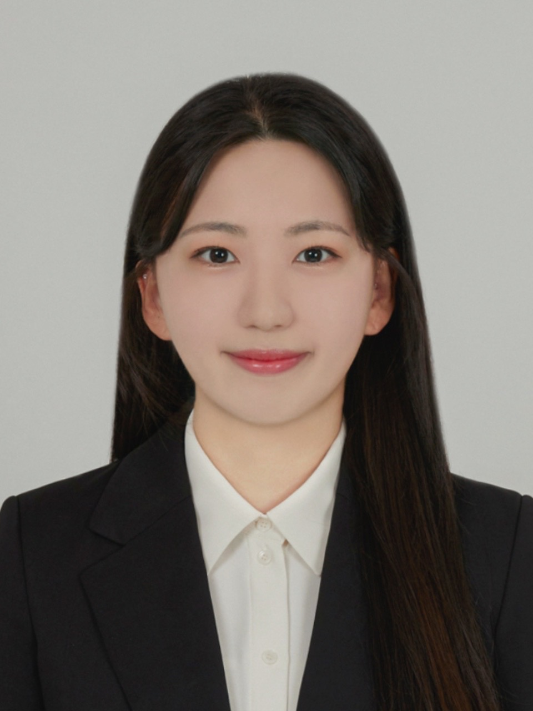

2021.09 ~ 2021.12
행정안전부 · 한국지능정보사회진흥원 청년인턴
- 공공데이터 정제 업무 수행
AI Engineer

멀티모달 딥러닝 연구와 공공데이터 정제 업무 경험을 보유한 AI Engineer 지원자입니다. 중앙대학교 AI STAT Lab에서 이종 데이터 통합 분석을 위한 멀티모달 딥러닝 연구에 참여했으며, 머신러닝·딥러닝·자연어 처리 기반의 문제 해결 역량을 쌓았습니다.
음성-텍스트 멀티모달 연구 수행.
졸업 논문 Cross-Dataset Robust Audio-Based Depression Detection via Audio Mamba Embeddings and Symptom-Guided LLM Representations
Advanced Low (Speaking Score 170)
IEEE AASP
한국지능정보사회진흥원
석사 과정 동안 빠르게 변화하는 AI 기술을 지속적으로 학습하고 실제 연구에 적용했습니다. 연구실에서는 음성과 비디오를 중심으로 서로 다른 연구가 진행되었으며, 매주 공동 세미나를 통해 각 분야의 최신 연구와 기술을 공유했습니다. 이 과정에서 비디오 데이터 처리에 Mamba 계열 모델을 활용하는 연구를 접했고, 이후 Audio Mamba가 등장하자 관련 논문과 구조를 빠르게 학습하여 졸업 논문의 오디오 전처리 기법으로 적용했습니다. 연구 초기의 BERT 기반 모델부터 최신 오디오 인코더와 Mamba 계열 모델까지 다양한 기술의 변화를 경험하며, 새로운 기술을 단순히 학습하는 데 그치지 않고 현재 연구 문제에 어떻게 활용할 수 있을지 판단하고 직접 적용하는 역량을 길렀습니다.
석사 과정의 주요 연구 주제는 음성 기반 우울증 탐지였습니다. 기존 연구는 하나의 데이터셋을 학습·검증·테스트 세트로 나누어 높은 성능을 달성하는 방식이 일반적이었지만, 다른 데이터셋에 적용하면 성능이 크게 저하되는 문제가 있었습니다. 실제 임상 환경에서 활용 가능한 모델을 만들기 위해서는 특정 데이터셋에서의 높은 성능보다 새로운 환경에서도 안정적으로 작동하는 일반화 성능이 중요하다고 판단했고, 단일 데이터셋의 SOTA 달성보다 Cross-Dataset Generalization과 강건성 향상에 초점을 맞춰 연구를 진행했습니다. 이를 위해 최신 오디오 인코더를 활용해 음성 특징 표현을 개선하고, 오픈소스 LLM인 LLaMA를 활용하여 발화 스크립트를 분석한 뒤 우울증 평가 항목별 점수를 생성하는 방법을 적용했습니다. 이를 통해 단순한 우울증 여부 예측을 넘어 모델의 판단 근거를 구체적으로 제시할 수 있도록 해석가능성을 강화했습니다. 실제 임상 서비스에 즉시 적용할 수준의 절대적인 성능에는 도달하지 못했지만, 데이터셋이 변경될 때 성능이 크게 저하되던 기존 접근보다 다양한 데이터 환경에서 보다 강건한 모델을 설계했다는 점에 연구의 의미가 있다고 생각합니다.